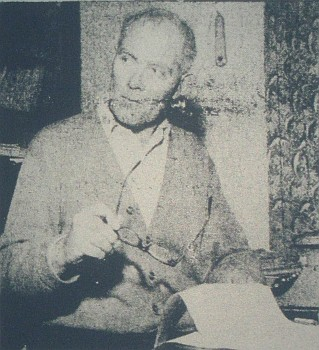

(19/5/1910- 13/8/2002)
Auteu, fèrmyi, membre fondateu d'l'Assembliée d'Jèrriais et rédacteu duthant d's années d'san Bulletîn d'Quart d'An, et sustout l'chein tch'êcrivit l'grand “Dictionnaire Jersiais-Français”, il înspithit eune généthâtion à continnuer ses êfforts pouor protégi la langue dé Jèrri.
San travas fut r'connu par la Couronne Britannique en 1976 quand i' fut créé Officyi dé l'Ordre dé l'Empithe Britannique par Sa Majesté Lîzabé II, Duc dé Nouormandie.
En 1967, i' fut êlu membre d'l'Académie Rouoyale Suèdouaise à Uppsala tchi voulait “honorer lé savant fèrmyi et homme d'êtude pouor san dictionnaithe si riche et pliein d'înformâtion.” Et en 1968 i' fut êlu à l'Académie des Arts, Sciences et Belles Lettres dé Caën.
En 1973 l'Journal Officiel d'la République Francaise annoncit l'accord d'un doctorat honoris causa au Sieur Lé Maistre et ch'fut en 1974 qué l'honneu fut r'chu par l'auteu Jèrriais à l'Unnivèrsité d'Caën.
Lé Sieur Lé Maistre n'avait dgéthe ieu d'êcolage unnivèrsitaithe mais auprès pus d'quarante ans d'travas et d'èrchèrches, i' mênagit à compliéter san Dictionnaithe tchi fut publié par Le Don Balleine auve lé souôtchein d's Êtats d'Jèrri en 1966, neu chents ans auprès la Contchête Nouormande dé l'Angliétèrre.
 D'pis chu temps-là, l'Dictionnaithe a 'té fait sèrvi par les auteurs dé Jèrri, par les r'chèrcheurs et par l's ensîngnants tchi sont à ensîngni la vielle langue dé Jèrri ès mousses dans l's êcoles dé Jèrri.
L'Docteu Fraînque (coumme i' tait mênommé dans ses dreines années) avait êcrit d's articl'yes dans les gâzettes, des poésies, des cantiques, des articl'yes dans l'Bulletîn d'Quart d'An et un tas d'tchi qu' nou pouôrrait app'ler dans l'ensembl'ye “eune encyclopédie d'la vie d'Jèrri”
I' considéthait qu'san “chef d'oeuvre” - mîns à part l'Dictionnaithe - 'tait sa vèrsion Jèrriaise du “Robaïyat d'Omar Khayyam”.
Dans sa vèrsion Jèrriaise du Sèrmon sus la Montangne dé l'êvangile dé St. Matchi, l'Docteu Fraînque êcrivit:
“Et nou n'alleunme pon eune chandelle pouor la mett' souos un bouossé, mais nou la met sus un changlyi, à seule fin qu'oulle êcliaithe touos les cheins d'la maiethon.
Qué vouot' leunmiéthe èrlise dévant l's hommes, à seule fin tch'i' vaient vouos bouonnes oeuvres, et tch'i' glorifyient vouot' Péthe tch'est dans les cieux.”
Lé travas du Sieur Fraînque Lé Maistre a bein êcliaithi touos les cheins d'la maiethon.
Viyiz étout: